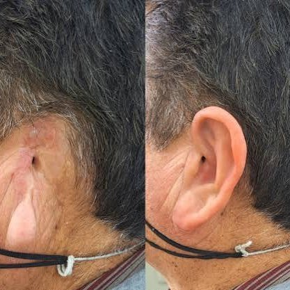

Infografías sobre prótesis del cuello

Artrodesis cervical
La artrodesis cervical es un procedimiento quirúrgico en donde se trata de fusionar dos o más huesos de la columna cervical (cuello) para corregir un disco dañado, el desgaste de los huesos o inestabilidad del cuello.
- Jóvenes
- Estructural

Artroplastia cervical
La artroplastia cervical es una alternativa a la artrodesis cervical, en la que en vez de fusionar dos huesos, se reemplaza el disco dañado por una prótesis.
- Jóvenes
- Estructural